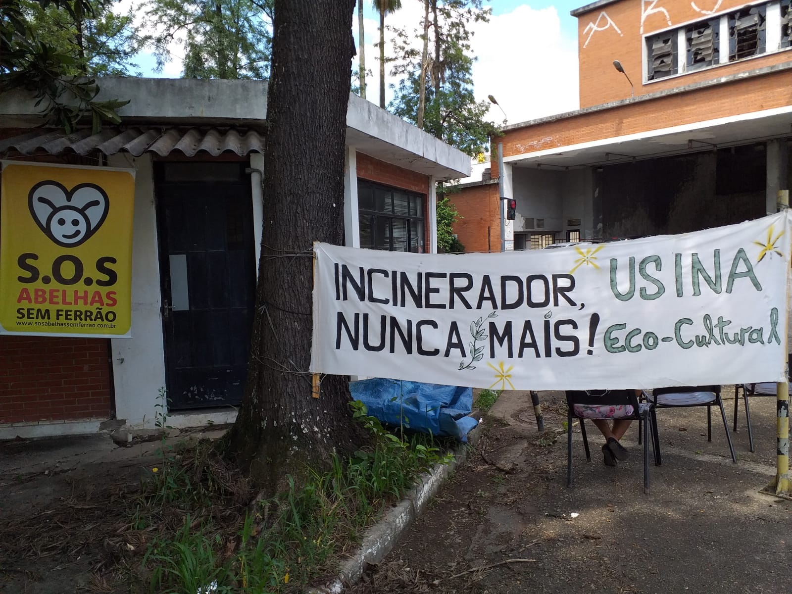

<div class="container mb-5">
    <div class="row align-items-center">


        <!-- Parte 1 -->
        <div class="col-md-8">
            <h5 class="my-historia-s3-doAbandonoAocupacao">Do abandono à ocupação</h5>
            <div><br></div>

            <div class="my-historia-s3-texto">
                <p>
                    O Incinerador encerrou oficialmente em 2002, marcado por uma celebração com balões coloridos. Houve
                    461 reclamações formais, 19 multas ambientais não pagas, e o local permanece considerado tóxico, já
                    que o poder público não fez nada para “desintoxicar”. As tentativas de transformá-lo em um polo
                    cultural e ambiental foram frustradas, deixando o prédio interditado, com vidros quebrados e
                    pichações. A chaminé continua como símbolo da luta da comunidade.
                </p>
                <p>
                    Ao lado, o Transbordo Vergueiro recebe cerca de 3000 toneladas de lixo diariamente. Localizado na
                    região centro-sul de São Paulo, mais precisamente no bairro do Ipiranga, em frente à estação de
                    metrô Santos-Imigrantes da Linha Verde do Metrô, o Coletivo Usina Eco-Cultural decidiu ocupar o
                    espaço que ficou abandonado durante 20 anos, depois que um grupo de moradores conseguiu paralisar
                    imediatamente as atividades do Incinerador em 2001.
                </p>
            </div>
        </div>

        <!-- Parte 2 -->
        <div class="col-md-4">
            
        </div>

    </div>
</div>